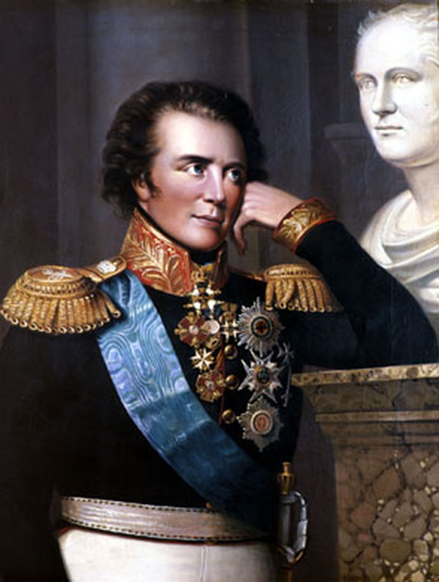
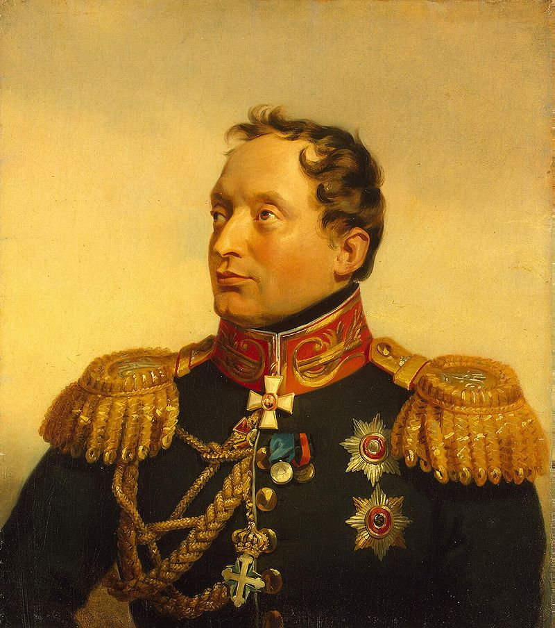
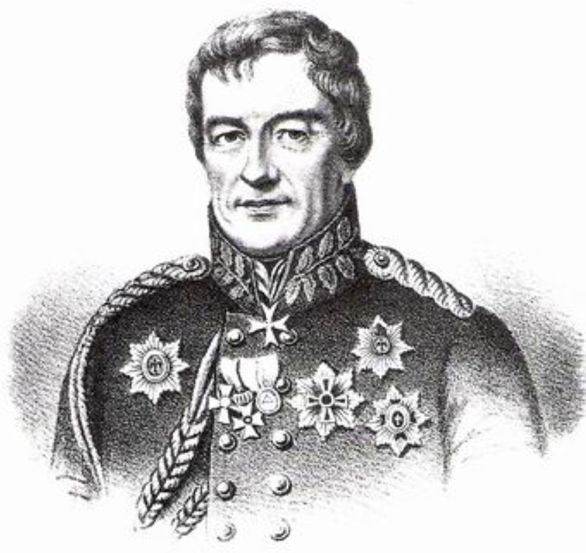

1812년, 드리사(Drissa)에서의 러시아군 : '전쟁과 평화' 중에서
게시: 2019-12-23T06:30:45+09:00
톨스토이의 소설 '전쟁과 평화'는 누구나 인정하는 명작 고전입니다. 여기에는 역사상 실존 인물들이 대거 등장하며, 많은 역사서에서 잘 다루지 않는 퓰과 그가 기안했던 드리사 방어 진지에 대해서도 꽤 자세히 나옵니다. 무엇보다도 빌나에서 후퇴한 이후 원래 계획대로 드리사 방어 기지로 후퇴한 러시아군의 내부 상황에 대해서 무척 생생한 정보가 담겨 있습니다. 제가 구텐베르크 프로젝트에서 다운받은 영문판 전쟁과 평화를 제 나름대로 번역했습니다. ------------------------------------ 제9권 1812년 제9장 안드레이 대공이 러시아군 총사령부에 도착한 것은 6월 말이었다. 짜르가 함께 하고 있던 제1군은 드리사(Drissa)의 요새화된 병영에 주둔하고 있었다. 제2군은 프랑스의 대군에 의해 제1군과 단절된 채 퇴각 중이었는데 들리는 말로는 제1군과 합류하기 위해서 애쓰고 있다고 했다. 모두들 러시아군의 전반적인 상황에 대해 불만이 많았지만, 정작 아무도 러시아 본토가 침공받을 위험에 대해서는 걱정하지 않았다. 다들 이 전쟁이 러시아의 서부 지방, 즉 옛 폴란드-리투아니아 지역을 넘어서리라고는 생각하지 않는 듯 했다. 안드레이 대공이 자신이 배속된 상관인 바클레이 드 톨리를 찾아낸 것은 드리사(Drissa) 강둑에서였다. 기지 근처에는 읍내는 커녕 큰 마을조차 없었으므로 제1군에 종군 중인 엄청난 수의 장군들과 궁정 인물들은 강 양안 반경 6마일 내에 있는 마을들에 있는 가장 좋은 집들에 기거하고 있었다. 바클레이 드 톨리는 짜르가 있는 곳에서 거의 3마일 떨어진 곳에 숙영 중이었다. 그는 딱딱하고 차가운 태도로 볼콘스키(안드레이 대공)를 맞이했고 외국 억양이 섞인 어투로 그에게 어떤 보직을 맡길 지에 대해 짜르에게 진언을 해두겠지만 발령이 날 때까지는 그의 참모진에 남아주기를 부탁한다고 말했다. 안드레이 대공이 제1군 내에 있을 것으로 기대했던 아나톨리 쿠라긴은 거기에 없었다. 그는 페체르부르크로 가버렸지만, 안드레이 대공은 그 이야기를 듣고 기뻤다. 그는 거대한 전쟁을 수행 중인 중심부의 이해 관계에 신경을 집중하고 있었고, 쿠라긴 생각으로 집중이 안되던 상태에서 한동안 벗어날 수 있게 된 것이 기뻤다. 처음 나흘 동안은 그에게 별 보직이 없었는데, 이 동안 그는 요새화된 전체 기지 주변을 말을 타고 돌아다니면서 자기 자신의 지식 및 전문가들과의 대화로부터 이 병영에 대한 명확한 평가를 내려보려 했다. 하지만 기지가 쓸 만한지 아닌지에 대해 그는 평가를 내릴 수가 없었다. 그의 군사 경험과 오스트리아 원정 (아우스테를리츠 전투를 뜻함 : 역주) 때 보았던 것을 통해서 이미 그는 깊은 심사숙고를 거친 작전 계획도 실제로는 별 쓸모가 없으며 모든 것은 원래 예측이 불가능한 적의 움직임에 어떤 식으로 부딪히느냐, 그리고 누가 어떻게 이 모든 문제들을 다루느냐에 달려있다고 결정을 내린 뒤였다. 이 마지막 점을 스스로 분명히 하고자 안드레이 대공은 그의 지위와 인맥을 활용하여 군의 지휘권과 거기에 얽힌 사람들과 당파의 성격에 대해 알아보았다. 그가 파악한 상황은 다음과 같았다. 짜르가 아직 빌나에 있는 동안, 야전군은 크게 3개군으로 나뉘어 있었다. 바클레이 드 톨리 지휘하에 있는 제1군과, 바그라티온 밑의 제2군, 그리고 토르마소프의 제3군이었다. 짜르는 제1군과 함께 있었지만, 총사령관의 자격으로 있는 것은 아니었다. 발행된 명령서에는 짜르가 지휘를 맡는다는 내용은 없고 그냥 군과 함께 있을 것이라고만 되어 있었다. 더군다나 짜르는 총사령관 참모진이 아니라 황실 사령부 참모질을 데리고 있었다. 황실 수석 참모이자 병참감인 볼콘스키 대공과 장군들, 황실 시종무관들, 외무부 관료들, 그리고 많은 수의 외국인들이 짜르를 보좌하고 있었지만 그 중 군 참모들은 없었다. 이들 외에도 뚜렷한 보직 없이 그냥 짜르와 동행하고 있는 사람들이 있었다. 전임 국방장관인 아락체예프, 고위 장성인 베니히센 백작, 짜르의 동생인 콘스탄틴 파블로비치 대공, 총리인 루미안체프, 전임 프로이센 장관인 슈타인(예나 패전 이후 프로이센의 개혁을 추진하다가 나폴레옹에 의해 축출된 그 슈타인 맞습니다 : 역주), 스웨덴 장군 아름펠트, 전체 작전의 주요 기안자인 퓰(후퇴 작전을 기획하고 드리사 요새 구축을 주장한 프로이센 출신 장군입니다 : 역주), 부관이자 사르데냐 망명 귀족인 파울루치, 볼초겐, 기타 많은 이들이 있었다.

(아름펠트 Gustaf Mauritz Armfelt 입니다. 그는 1809년 구스타프 4세에 대한 쿠데타에 반발하여 스웨덴을 버리고 러시아로 망명한 스웨덴 귀족입니다. 그는 나중에 짜르 알렉산드르에 대해 엄청난 영향력을 갖게 되었고, 핀란드의 자치 및 노르웨이가 덴마크의 지배에서 벗어나 스웨덴에 병합되는 것을 지지하는 등 스칸디나비아 반도의 정세에 큰 영향을 끼쳤습니다. 그는 지금도 핀란드의 독립에 기여한 인물로 존경받는다고 합니다.)

(파울루치 Filippo Paulucci delle Roncole 입니다. 그는 원래 이탈리아 모데냐 출신인 사르데냐 왕국의 귀족이자 군 장교였습니다. '전쟁과 평화'에서는 망명 귀족이라고 표현되었지만 사실 그는 망명이라기보다는 커리어를 찾아 러시아에 온 것이었습니다. 오스트리아군에서도 잠깐 복무했던 그는 1807년 경에 그는 처가의 연줄을 이용하여 러시아군으로 이직에 성공하여 거기서 대령으로 승진했고 이후 투르크 및 페르시아 등 남쪽 전선에서 주로 싸웠습니다. 1812년 전쟁 직전에는 군 참모총장까지 임명되었으나 바클레이 드 톨리와 사이가 좋지 않아 결국 밀려나 리보니아 행정관이라는 이름 뿐인 보직으로 짜르를 보좌했습니다. 나중에는 사르데냐 왕국으로 되돌아가서 군 생활을 하다가 니스에서 평화롭게 죽었습니다.)

(볼초겐 Ludwig von Wolzogen 입니다. 그는 원래 뷔르템베르크 출신인데, 프랑스 혁명에 대한 반발 때문에 제1차 대불동맹전쟁에서 프랑스와 싸우기 위해 프로이센군 소위로 입대한 인물이었습니다. 나중에는 다시 뷔르템베르크로 돌아와 군에 있었고, 결국 원래 의도와는 달리 제3차 대불동맹전쟁에서 프랑스군 측에서 싸워야 했고 1806년 제롬 보나파르트와 뷔르템베르크 공주 카타리나의 결혼식에 참석하기도 했습니다. 프랑스에의 협력이 싫었던 그는 1807년 패전한 프로이센군에 재입대하려 했으나 프로이센에서는 기존 장교들도 퇴역시켜야 하는 판국이라서 그를 받아들일 형편이 안 되었고, 결국 그는 연줄을 이용해 러시아군에 자리를 얻었습니다. 1812년 전쟁 발발 당시 그는 대령 계급으로 바클레이 드 톨리의 참모 역할을 하고 있었습니다.) 비록 이들은 군 내에서 보직을 갖고 있진 않았지만 그들의 지위 때문에 무시할 수가 없었다. 군단 지휘관은 물론 총사령관조차도 자신이 어떤 이유로 베니히센이나 콘스탄틴 대공, 아락체예프 또는 볼콘스키 대공으로부터의 질문에 답을 해야하거나 이런 저런 조언을 받아야 하는지 의아해했다. 또 그런 인물들이나 짜르로부터 '조언'이라는 형태로 명령을 받았을 때 그걸 수행해야 하는지 무시해야 하는지 난처했다. 하지만 이건 그저 겉에서 보이는 상태일 뿐이었다. 짜르와 그 주변 인물들의 존재 자체의 근본적인 의미는 궁정인물의 관점으로 보자면 (짜르 근처에 있으면 모든 인물이 궁정인물이 되는 법이었다) 모두에게 분명했다. 그건 '짜르가 비록 총사령관의 직위를 가지는 것은 아니지만 모든 군의 통솔권을 가진다'는 것이었다. 짜르 주변 인물들은 그의 조력자들이었다. 아락체예프는 규율을 잡는 충직한 관리인이었고 짜르의 경호원 역할을 하고 있었다. 베니히센은 빌나 지방의 대지주로서 짜르가 방문했을 때 그 지방 귀족이 수행해야 할 명예의무를 수행하는 것처럼 보였지만 실제로 그는 유능한 장군이자 쓸모 있는 조언자였고, 언제든 바클레이를 밀어내고 그 자리를 차지할 준비가 된 인물이었다. 콘스탄틴 대공이 거기 있는 이유는 그게 어울려 보였기 때문일 뿐이었다. 전직 프로이센 장관인 슈타인이 거기 있는 이유는 그의 조언이 꽤 유용했고 짜르 알렉산드르가 개인적으로 그를 매우 존중했기 때문이었다. 아름펠트는 나폴레옹을 악의적으로 혐오했고 아주 자신감 넘치는 장군이었는데, 알렉산드르는 그런 자신감에 항상 이끌리는 편이었다. 파울루치는 용감하고 아주 단호하게 말을 하다는 점 때문에 거기 나와 있었다. 그 외 부관들은 그냥 항상 짜르를 따라다녔기 때문에 거기에 있었고, 마지막이자 가장 중요한 인물인 퓰은 나폴레옹에 저항하는 작전 계획의 입안자이자 알렉산드르가 그 작전 계획을 신뢰하도록 만든 사람으로서 전쟁의 전반 사항 모두를 감독하고 있었다. 퓰에게는 볼초겐이 따라 다녔는데, 그의 역할은 퓰의 생각을 좀 더 알아듣기 쉽게 대변해주는 것이었다. 퓰은 성격이 좋지 않은 책벌레 이론가로서 어찌나 자신감이 넘치는지 다른 모든 사람들을 경멸할 지경에 이른 사람이었기 때문이었다. 이 러시아인들 및 외국인들은 매일같이 새로울 뿐만 아니라 전혀 예상 밖의 아이디어들을 매일같이 쏟아냈는데, 특히 외국인들이 그런 경향이 더 강했다. 이는 자국이 아닌 나라에 고용된 사람들이 흔히 보여주는 그런 대담함 떄문이었다. 이들 외에도 그들의 상관이 군에 있었기 때문에 군을 따라다니는 부차적 인물들이 많이 있었다. 이 거대하고 불안하지만 화려하고 거만한 분위기 속의 의견과 목소리들 중에서 안드레이 대공은 다음과 같이 명확하게 구분되는 경향들과 파벌들이 있다는 것을 파악할 수 있었다. 첫번째 파벌은 퓰과 그의 추종자들이었는데, 이들은 군사 과학을 신봉하는 군사 이론가들로서 사선 이동, 측면 우회 등의 법칙 등을 절대불변의 법칙으로 믿었다. 퓰과 그의 추종자들은 전쟁의 가설에 의해 정의된 정밀한 법칙에 따라 영토 깊숙한 곳으로의 후퇴를 요구했고, 그 이론에 대한 어떤 이탈이든 모두 야만성이나 무지 혹은 악의로 간주했다. 이 파벌에 속하는 사람들은 외국 귀족들로서 볼초겐, 빈칭거로더 등 주로 독일인들이었다. 두번째 파벌은 첫번째 파벌에 정면으로 반대하는 자들이었다. 한쪽으로 치우친 극단주의는 항상 그렇듯이 반대쪽으로 치우친 극단주의와 맞부딪히는 법이다. 이 파벌에 속하는 사람들은 빌나에서 폴란드로의 진격과 모든 기존 계획의 파기를 요구했다. 과감한 전투의 옹호 외에도 이 파벌은 민족주의를 대표했기 때문에 이들은 논쟁에서 그만큼 더 일방적이었다. 그들은 주로 러시아인들로서 바그라티온(사실 바그라티온은 그루지아 귀족입니다...: 역주)과 전면으로 나서기 시작하고 있던 에르몰로프 등이 있었다. 한때 에르몰로프의 유명한 농담이 회자된 적이 있었는데 그 내용은 짜르에게 자신을 독일인으로 만드는 황은을 베풀어달라고 간청드렸다는 것이었다. 이 파벌 사람들은 수보로프(제2차 대불동맹전쟁에서 뛰어난 전과를 올린 러시아의 명장입니다 : 역주)의 기억을 떠올리며 우리가 해야 할 일은 이론을 세우거나 지도에 핀을 꽂는 것이 아니라 싸워서 적을 쳐부수고 러시아에서 쫓아내는 것이며 군의 사기가 떨어지도록 내버려두어서는 안된다고 주장했다. 세번째 파벌이 짜르의 가장 큰 신뢰를 받고 있었는데, 여기에는 첫번째 파벌과 두번째 파벌 사이에서 합의를 끌어내려는 궁정인사들이 속해 있었다. 이 파벌 사람들은 주로 민간인들로서 아락체예프도 그들 중 하나였고, 실제로 확신은 없지만 마치 확신을 가진 것처럼 보이고 싶어하는 사람들이 일반적으로 말하는 내용을 떠들고 다녔다. 그들의 주장에 따르면 전쟁에는, 특히 보나파르트(이제 러시아에서는 나폴레옹이 아니라 보나파르트라고들 불렀다)와 같은 천재를 상대로 하는 전쟁에는 정교하게 짜여진 계획과 심오한 학문적 지식이 필요한데, 그런 점에서 퓰은 천재이긴 하지만 동시에 이론가들은 한쪽으로 치우치는 경향이 있으므로 그들을 절대적으로 믿어서는 안되고 퓰에 대한 반대론자들과 전쟁에서 잔뼈가 굵은 베테랑들의 말도 들어본 뒤 그 중간 어딘가를 택해야 했다. 그들은 퓰의 작전 계획에 따라 제1군이 드리사 기지를 고수해야 한다고 주장하면서도 제2군과 제3군에게는 퓰의 계획괴는 다른 동선을 취해야 한다고 주장했다. 이 계획은 어느 파벌의 목적도 달성할 수 없는 어정쩡한 것이었지만 이 세번째 파벌의 추종자들에게는 그 주장이 가장 그럴싸 해보였다. 네번째 파벌에서 가장 두드러진 주자는 짜르의 동생(원문에는 Tsarévich라고 나오는데, 이는 짜르의 아들이라는 뜻으로서 알렉산드르의 동생인 콘스탄틴 대공을 말합니다 : 역주)였다. 이 사람은 자신이 마치 사열을 하는 것과 같이 투구와 기병 제복을 차려 입고 프랑스군을 용감히 무찌르는 상상을 하며 근위 기병대의 선두에 서서 돌격했다가, 본의 아니게 정말 맨 앞 줄에 서게 되자 엉망진창이 된 혼전 속에서 간신히 탈출해야 했던 아우스테를리츠 전투의 좌절감을 잊어버릴 수가 없었다. 이 파벌 사람들의 주장에는 솔직함이라는 것에 따르는 장점과 단점이 고스란히 있었다. 이들은 나폴레옹을 두려워했다. 적군의 강대함과 아군의 취약성을 잘 알고 있었고 솔직하게 그렇게 말했다. 그들은 이렇게 주장했다. "이 모든 것에서 나올 결과라고는 슬픔과 치욕, 폐허 밖에 없다 ! 우리는 이미 빌나와 비텝스크를 포기했고 이젠 드리사도 버리게 될 것이다. 이제 남은 유일한 이성적 선택은 페체르부르그까지 빼앗기기 전에 가능한 한 빨리 평화 협상을 마무리 짓는 것이다." 이 관점은 군 고위층 내에 팽배해 있었고 페체르부르크에서도 지지하는 목소리가 있었으며, 다른 이유에서긴 하지만 총리인 루미얀체프도 평화 교섭에 찬성하는 입장이었다. 다섯번째 파벌은 대단한 남자라고 할 수는 없지만 국방부 장관이자 총사령관인 바클레이 드 톨리의 지지자들이었다. (사실 바클레이는 총사령관이 아니었고 제1군 사령관에 불과했습니다 : 역주) "비록 그가 대단한 인물이 아니더라도 (그들은 항상 그런 식으로 이야기를 시작했다) 바클레이는 정직하고 실용적인 사람인데다 더 나은 사람도 없다. 그에게 실권을 주어야 한다. 지휘권의 통일 없이는 전쟁을 수행할 수가 없기 때문이다. 실권이 주어지면 그는 핀란드 전쟁 때 했던 것처럼 그의 실력을 보여줄 것이다. 우리 군은 조직이 잘 되어 있고 강력한데다 어떤 패배도 겪지 않고 드리사로 무사히 후퇴할 수 있었는데, 이건 전적으로 바클레이의 공로이다. 바클레이가 베니히센으로 교체된다면 모든 것이 끝장이다. 베니히센은 이미 1807년에 자신의 무능함을 입증했기 때문이다." (1807년 6월 프리틀란드 전투의 패배를 뜻합니다. : 역주) 여섯번째 파벌은 베니히센파로서 반대의 말을 했다. 즉 어떻게 보더라도 베니히센보다 더 활발하고 경험이 많은 사람이 없다는 것이었다. "아무리 비틀어 보아도, 결국은 베니히센에게 지휘권이 돌아갈 수 밖에 없어. 지금은 다른 사람들이 실수를 하도록 내버려 두라구 !" 그들은 드리사로의 후퇴가 매우 부끄러운 일이며 끊이지 않고 벌어지는 실수연발에 불과하다고 주장하며 이렇게 말했다. "지금 더 많은 실수가 벌어질 수록 좋아. 그럴 수록 더 빨리 이런 식으로 일이 흘러가도록 내버려둘 수는 없다는 것을 알게 될 테니까. 지금 필요한 것은 바클레이나 뭐 그런 사람들이 아니라 베니히센 같은 남자야. 베니히센은 1807년에 공적을 남겼고 나폴레옹에게 본때를 보여줬지. (1807년 2월의 아일라우 전투를 뜻합니다. 여기서 나폴레옹은 베니히센에게 사실상 패배했다고 할 수도 있었습니다. : 역주) 군 내에서 제대로 영이 서는 사람이 필요한데 베니히센만이 바로 그런 사람이야." 일곱번쨰 파벌은 특히 젊은 군주 옆에 언제나 있기 마련인 사람들로서 짜르 알렉산드르 주변에 특히 이런 사람들이 많았는데, 알렉산드르에게 열정적으로 헌신하는 장군들과 황실 시종무관들이었다. 알렉산드르에 대한 이들의 헌신은 그저 군주에 대한 의무에서가 아니라, 마치 1805년 로스토프가 그랬던 것처럼 진심으로 아무 사심없이 인간으로서 그를 사랑하는 것이었고, 이들은 알렉산드르가 모든 미덕을 갖추었을 뿐만 아니라 능력도 출중하다고 믿고 있었다. 이들은 짜르가 군의 총사령관직을 겸손히 사양한 것에 감탄했지만 그런 지나친 겸양은 좋지 않다며 짜르를 탓했다. 그들의 소원은 사랑하는 짜르께서 그런 수줍음을 버리고 스스로 군 총수권을 행사하겠다고 선언하고 총사령관 참모진을 구성하여 필요에 따라 경험많은 이론가들과 실무적인 군인들의 조언을 받아가며 군을 지휘해서, 군의 사기를 극대화하는 것이었다. 여덟번째이자 가장 큰 파벌은 다른 파벌들을 99대1 정도의 비율로 압도하는 수를 자랑했는데, 이들은 전쟁도 평화도 원치 않고 전진도 드리사 기지에서의 방어도 원치 않으며, 바클레이도 짜르도, 또는 퓰도 베니히센도 원치 않았다. 이들이 원하는 것은 딱 하나 가장 본질적인 것으로서 그저 이익과 쾌락 뿐이었다...